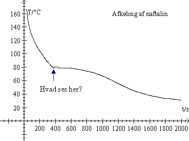
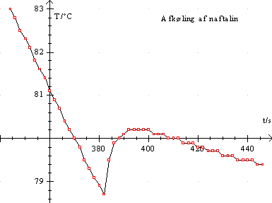
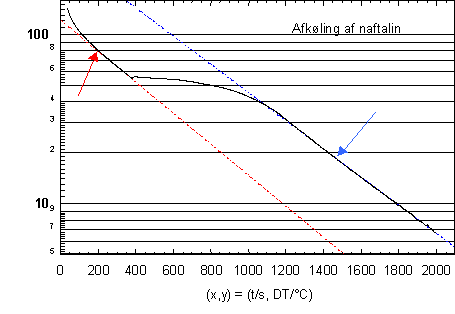

Formålet med forsøget er at undersøge naftalins afkølingskurve og herunder beskrive faseovergange og energiudvekslinger.
Et lille reagensglas med ca. 2ml naftalin, et termometer med interface tilsluttet Datalyse.
Kom naftalin i reagensglasset, så det vil fylde ca. 2 ml i smeltet tilstand. Opspænd reagensglasset i et stativ og anbring termometret i reagensglasset også fastspændt i et stativ.
Start programmet Datalyse, så temperaturen i naftalinen kan aflæses.
Opvarm med en bunsenbrænder eller hvis du sidder hjemme med et fyrfadslys indtil naftalinen er ca. 150°C. Naftalin koger ved 217,7°C.
Start dataopsamlingen, idet temperaturen aflæses hvert 2. sekund i ca. ½ time. Under afkølingen iagttages naftalinen og grafen, for så kan afkølingsforløbet bedre beskrives. Når forsøget er færdigt noteres stuetemperaturen i memoen i Datalyse og opgaven gemmes.
 |
 |
Et forsøg kan se ud som ovenfor. Til højre ses et udsnit. Beskriv afkølingsforløbet. Find naftalins smeltepunkt i en databog og udregn din afvigelse.
Du kan eventuelt kopiere graferne i Datalyse (som metafile) og indsætte dem i din rapport, som det netop er vist i denne vejledning.
Fratræk stuetemperaturen fra de målte temperaturer. Dette gøres i Datalyse ved i tabellen at udfylde en ny søjle og ved beregningen fx vælge b-22. Tegn grafen. Vælg dernæst logaritmisk 2. akse. Grafen kan se således ud:

To områder af grafen er tilsyneladende lineære. Men den røde tendenslinie passer ikke når temperaturforskellen er for høj. Angiv nogle grunde hertil.
Bestem forskriften for den blå del af grafen. Det gøres ved at sætte kryds for beregning af (t, f(t)) ved den lineære regression. Vælg så funktion f(t) også i panelet til venstre. Tast OK og funktionen indtegnes. Lav koordinatsystemet om, så 2.aksen igen bliver lineær. Indsæt også denne graf i din rapport.
Benyt forskriften til at beregne naftalinens temperatur efter en time.
Hvor lang tid er temperaturforskellen mellem naftalinen og omgivelserne om at blive halveret?